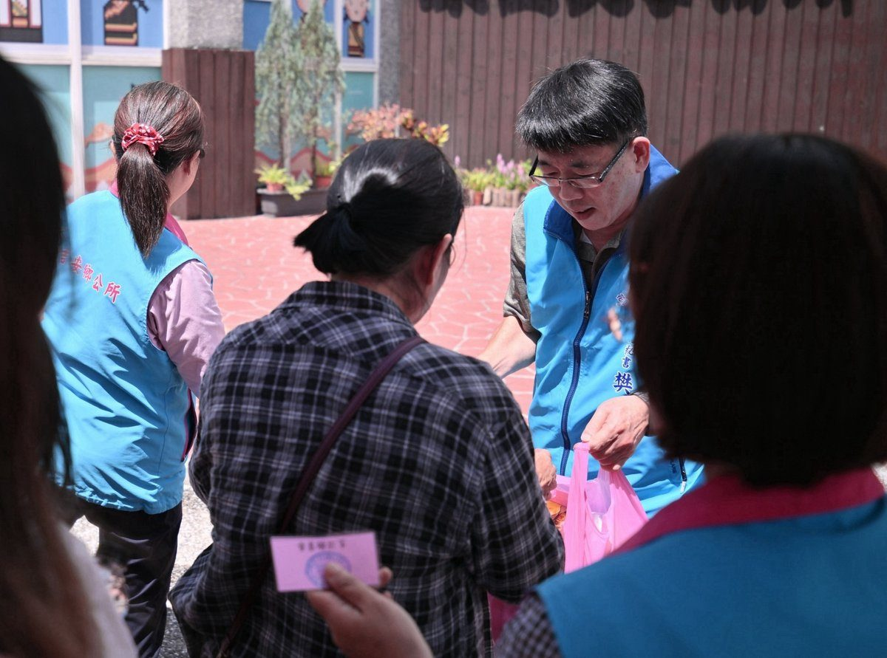

吉安中秋送暖訪部落 游淑貞攜手慈惠堂關懷弱勢

可樂電子報小編/編輯
中秋佳節將屆，花蓮縣吉安鄉公所全面深化部落基層關懷，整合中央與民間慈善能量，昨（15）日上午在原住民事務所前廣場辦理中秋愛心物資發放作業。公所團隊主動協助年長與行動不便的族人搬運重物上車，將實質米糧與佳節祝福送達百位部落弱勢家庭手中。

本次送暖行動由農業部農糧署東區分署挹注白米89包（合計約742台斤），以及聖地慈惠堂總堂善心捐助100份日常民生綜合物資，及時減輕部落弱勢家庭的生活負擔。此外，聖地慈惠堂總堂日前辦理瑤池金母聖誕法會期間獲贈之平安米，公所社會課亦妥善規劃轉贈至鄉內20處福氣站及社區關懷據點，讓大眾善心充分擴散至長者平日餐飲。

吉安鄉長游淑貞表示，關懷弱勢與深耕部落是鄉政推進的核心價值，由衷感謝農糧署長年提供糧食支援，以及聖地慈惠堂匯聚各界善信的愛心力量，在中秋節前夕為部落族人帶來即時溫暖。公所團隊亦在發放現場深入傾聽族人生活需求並宣導社福資源，未來將持續跨課室整合社會安全網絡，讓幸福關懷深入吉安每一個角落。